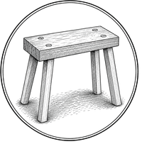
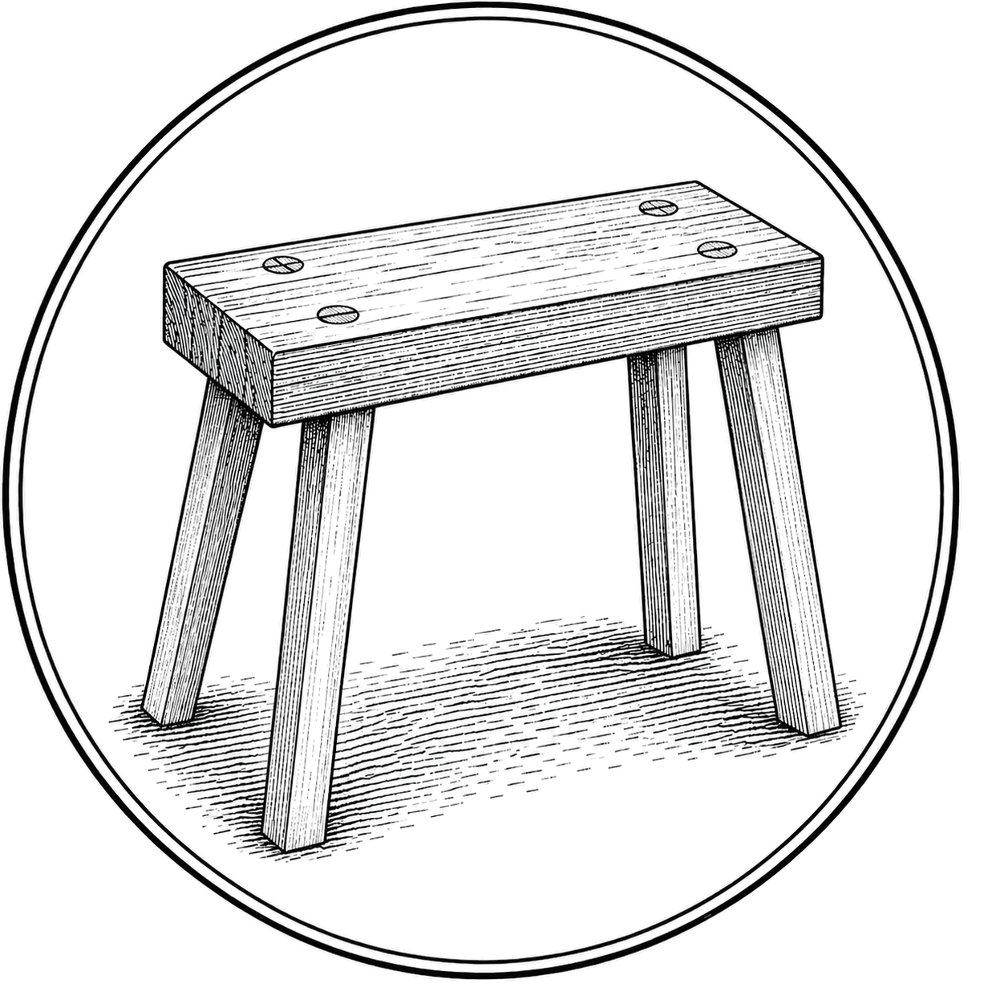

Stool mark — size preview
SVG (simplified) — sticky-header alongside name
dark mode (32px)
Lee Wilkers
PNG (engraved, with hatching) — hero / og-image / large
stool-sm 200px

stool-lg 1200px (full)

Side-by-side: same height, engraved vs simplified
At sticky-header sizes (28–40px) the engraved hatching aliases to grey smudge — simplified SVG keeps the silhouette legible.